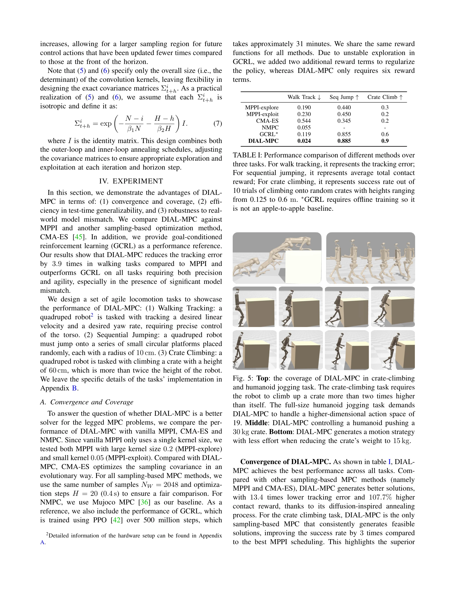
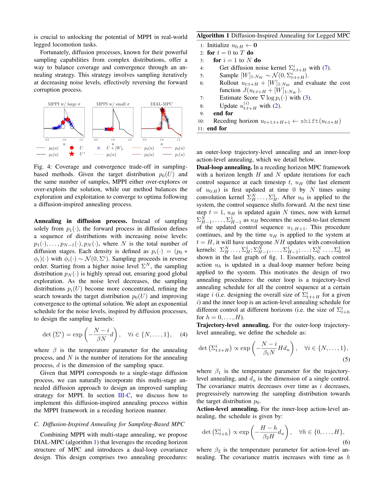

Essence

Fig. 1: Diffusion-inspired annealing for legged MPC (DIAL-
DIAL-MPC는 diffusion 프로세스의 iterative refinement 아이디어를 sampling-based MPC에 적용하여 full-order 사족 로봇의 torque-level 제어를 실시간으로 수행하는 training-free 방법이다.
저자: Haoru Xue, Chaoyi Pan, Zeji Yi, Guannan Qu, Guanya Shi | 날짜: 2024-09-23 | URL: https://arxiv.org/abs/2409.15610
Fig. 1: Diffusion-inspired annealing for legged MPC (DIAL-
DIAL-MPC는 diffusion 프로세스의 iterative refinement 아이디어를 sampling-based MPC에 적용하여 full-order 사족 로봇의 torque-level 제어를 실시간으로 수행하는 training-free 방법이다.

Fig. 5: Top: the coverage of DIAL-MPC in crate-climbing

Fig. 4: Coverage and convergence trade-off in sampling-
총평: 본 논문은 MPPI와 diffusion의 수학적 연결을 통해 sampling-based MPC의 근본적 한계를 새로운 각도로 접근하며, diffusion-inspired annealing이라는 창의적 방법으로 full-order 사족 로봇의 실시간 제어를 training-free로 달성한 의미있는 기여이다.